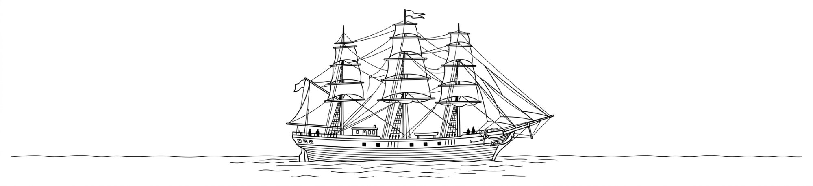

Комплексное техническое обследование с применением современного оборудования — от двигателей и электрики до корпуса и интерьера
Мы проводим полное техническое освидетельствование всех судовых систем — от двигателей до корпуса. Диагностика предшествует любому ремонту и позволяет точно определить объём и стоимость работ, исключая непредвиденные расходы.
| Вид диагностики | Метод | Срок | Выезд | Документ |
|---|---|---|---|---|
| Механика | ||||
| 01 Комплексное обследование судна | Визуальный УЗК Инструм. | 1–3 дня | На судне | Деф. ведомость + смета |
| 02 Диагностика главного двигателя | Эндоскопия Анализ масла | 4–8 ч | На судне | Дефектный акт |
| 03 Компьютерная диагностика двигателей | OBD / CANbus Сканер | 1–3 ч | На судне | Распечатка кодов + заключение |
| 04 Проверка компрессии / мокрой компрессии | Компрессометр Мокрый тест | 1–3 ч | На судне | Таблица замеров по цилиндрам |
| 05 Замеры давления масла | Манометр Динамика / стат. | 0.5–1 ч | На судне | Протокол давлений |
| 06 Вибродиагностика агрегатов | Вибро FFT-анализ | 2–4 ч | На судне | Виброграмма + заключение |
| 07 Анализ масла и СОЖ | Лаборатория | 2–5 дней | Лаборатория | Лаборат. заключение |
| 08 Дефектация дейдвудного устройства | УЗК Нутромер | 2–4 ч | На судне | Протокол замеров |
| Электрика | ||||
| 09 Диагностика электросистем | Тепловизор Мегаомметр | 4–8 ч | На судне | Протокол изоляции |
| 10 Компьютерная диагностика генераторов | Нагрузочный тест Осциллограф | 1–2 ч | На судне | Протокол нагрузочного теста |
| 11 Эндоскопия труднодоступных узлов | Эндоскоп | 1–4 ч | На судне | Фотоотчёт |
| Корпус и неразрушающий контроль (НК) | ||||
| 12 Ультразвуковой контроль корпуса (УЗК) | УЗК | 1–2 дня | На судне | Карта замеров + протокол |
| 13 Капиллярный контроль (ПВК) | ПВК | 2–4 ч | На судне | Протокол ПВК |
| 14 Обследование корпуса и набора | Визуальный УЗК | 1–2 дня | На судне | Деф. ведомость |
| Интерьер | ||||
| 15 Обследование отделки и обшивки салонов | Визуальный Влагомер | 2–4 ч | На судне | Фотоотчёт + ведомость |
| 16 Дефектация мебели и палубного покрытия | Визуальный Инструм. | 1–3 ч | На судне | Смета на восстановление |